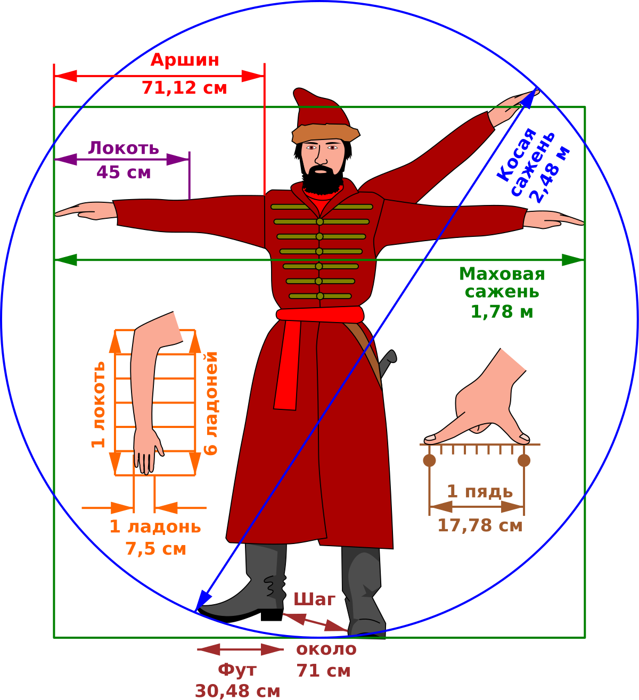
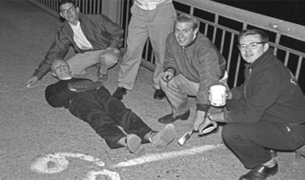

Меры длины - это средства измерения, имеющие постоянную длину. Это мы так всё знаем, скажете вы, верно? Да, отвечу я вам, но знаете ли вы где используются футы
и дюймы? А где использовались руты и клафтеры, арпан и чарса?
 Есть множество стариных русских мер измерения. Их придумали буквально из подручных
средств, а иногда даже из рук. Вот например локоть равнялся 45 сантиметрам (Здесь интуитивно понятно, что эта мера строится на локте), а были и такие о которых, если не знать,
то не догодаешься, например маховая сажень, которая была равна 1,78 метра, это было расстояние при вытянутых в разные стороны руки от одних пальцев до других. Перечеслять
их можно долго шаг, пядь, аршин, сажань косая, фут. Правда как это были очень не точные меры.
А если переместиться из России допустим в Персию, страну торговли. Единственную меру длины которую я там нашёл был Фарсах, которая была равна 5549 метров, сколько?!
Это же как они мерели свой товар? А дома, они что все жили в огромных хоромах или это была страну из одних купцов и богачей? Но как оказалось товар в Фарсах они не мерели,
да и жили там далеко не только богачи. А еденица, то сколько мог пройти караван за час.
А теперь давайте в будующие, когда при правлении Людовика 18 придумали, еденицы измерения принятые эталоном длины метры, сантиметры и миллиметры. В это время во Франции шла Великая
французская революция. “Смерть аристократам!”, “Да здравствует нация!” и “Предателей на фонарные столбы!” – такие лозунги раздавались по всей Франции, когда в 1792 г. двум астрономам
Жан Батисту Деламбру и Пьеру Франсуа Мешену Национальным собранием было поручено “измерить Землю”. Выражаясь научным языком, они должны были произвести полевые работы по измерению Парижского меридиана,
т.е. конкретного меридиана, который между испанской Барселоной на юге и французским Дюнкирхеном на севере точно проходит через Париж. Рассчитывая справиться с этим геркулесовым заданием за несколько месяцев,
в худшем случае за год, астрономы не приняли во внимание всей смуты и эксцессов революции, жертвами которой они сами чуть не пали по подозрению в шпионаже, и потому на решение этой задачи в конечном итоге у них ушло 6 лет.
И вот 19-го Брюмера (10 декабря) 1799 года титанический труд двух учёных привёл к предварительному официальному результату – из платины был отлит первый прототип эталона метра. Родился метр,
а вместе с ним и метрическая система, в которой метр является также единицей измерения площади и объёма, а единица массы привязана к метру.
А что если подумать о глупых мера длины, ну бывает же так что кто-то сказал глупость, а все подхватили. Вот так однажды была придумана длина Оливера Смута, в жизни он был
президент международной организации стандартов ISO. Она была определена исключительно для измерения длины Гарвардского моста.
Великобритании - страна, где необычные единицы измерения использовали достаточно часто. Одними из самых странных являются "Уэльс" и "Бельгия". Единица измерения "Уэльс", которая примерно равна размеру этой страны (20 000 квадратных километров), возникла еще во времена Британской империи и использовалась для описания размера различных географических районов. Так людям было легче представить себе размер той или иной территории. Например, когда американцы начали войну во Вьетнаме, британские СМИ написали о Вьетнаме, как о "стране в Юго-Восточной Азии, площадь которой равна 14 Уэльсам". Когда Великобритания присоединилась к Европейскому Союзу, единица измерения "Уэльс" был заменена "Бельгией", страной в 1,5 раза больше Уэльса.
И кстати именно так мерили Оливером Гарвардский мост
